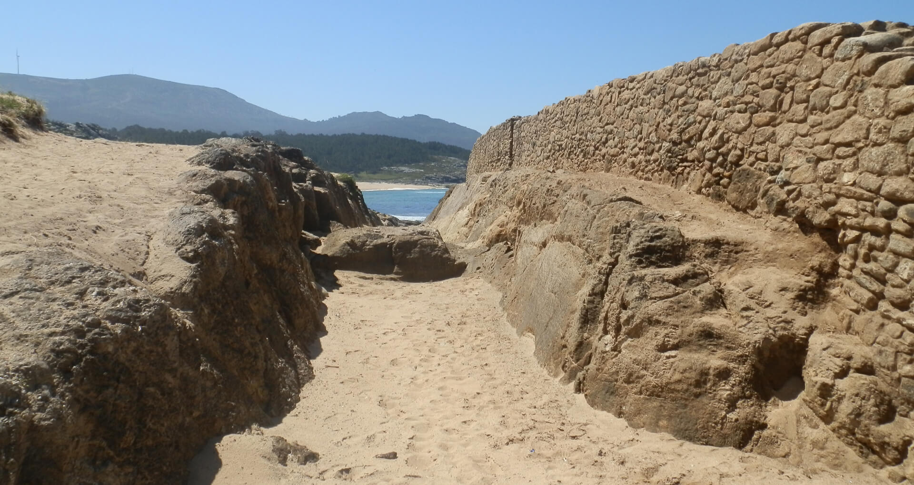

No
seu momento de esplendor, os visitantes que se achegaban ao Castro
atopábanse cun primeiro sistema defensivo composto por un gran foxo
escavado na rocha e unha monumental muralla de máis de 6 m. de ancho.
Como podemos observar aínda hoxe en día, estas defensas segmentaban o
istmo e separaban a pequena península da Punta do Castro coa terra
firme, unindo a traveso dunha liña transversal fortificada as dúas
praias que se atopan aos pes do Castro e franquean o istmo: a praia do
Castro e o areal da Polveira.
Estes restos interrompen o trazado de varios camiños que se dirixen as
praias, doadamente identificables polas pegadas paralelas en forma de
rodadas de carro. A maioría son tradicionais, deixadas polos carros dos
campesiños de Baroña nas procura do "argazo", o abono natural formado
polas algas. Malia todo, e sorprendentemente, descubriuse que un destes
camiños foi cortado no seu día pola escavación do foxo, o que demostra
que é anterior á construción da muralla e que, en datas temperás da
Idade do Ferro, os castrexos xa dispuñan de carros. Un dato moi
relevante para a Historia de Galicia.
O foxo foi escavado nunha zona de rocha branda, o que permitiu aos
obreiros de Baroña afondar ata unha profundidade próxima aos tres
metros. Nalgúns puntos da parede desta gabia monumental, aínda se poden
observar as marcas dos instrumentos que se empregaron para a súa
escavación, seguramente picos de ferro e martelos de pedra.
En épocas de temporal e mareas vivas, e ao igual que acontece
hoxe en día, o foxo inúndase coa auga do mar, o que aínda fai máis
inexpugnable o poboado.
Con parte dos materiais extraídos do foxo, construíuse a primeira
muralla, unha maciza construción de discorre paralela á anterior. Entre
unha e outra, os castrexos deixaron unha estreita repisa, necesaria
para poder levantar o paramento exterior do muro. Este consiste nunha
cachotería trabada con morteiro de terra de moi boa calidade. Malia que
posiblemente non alcanzaba moita altura, o punto forte desta defensa
estaba no seu ancho. Como dato ilustrativo, podemos dicir que o
conxunto de foxo e primeira muralla acada un ancho máximo de dez
metros, unhas dimensións que na arquitectura defensiva en Galicia non
se superan ata as murallas abaluartadas de Época Moderna.
Ás costas desta muralla, esténdese unha superficie baldeira de
estruturas arqueolóxica, o denominado primeiro recinto. En realidade, é
moi posible que no seu momento contivese algún tipo de construción, que
non tería que ser forzosamente doméstica. En todo caso, a erosión
mariña, moi importante nesta zona baixa de istmo, as faría desaparecer
calquera tipo de resto.